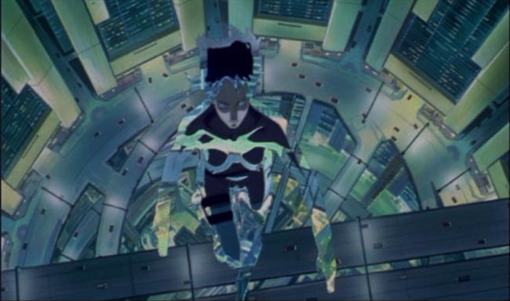
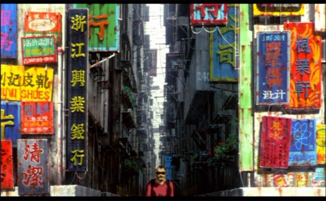
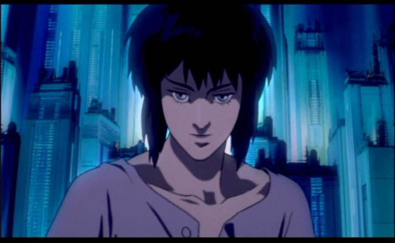
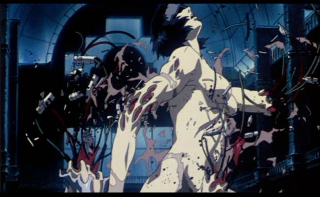
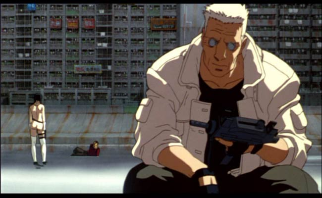
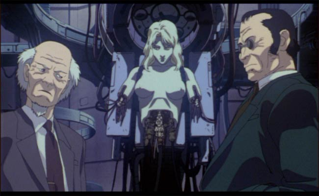
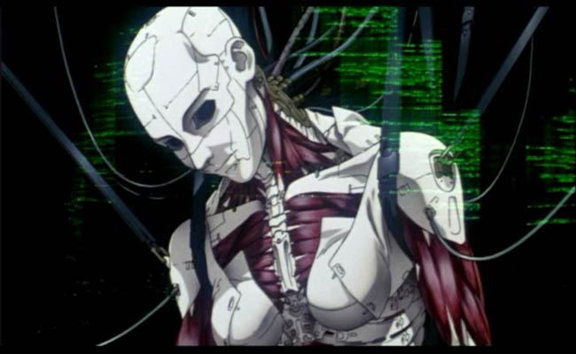

Movie review by : SFAM
Year : 1995
Directed by : Mamoru Oshii
Written by : Kazunori Itô, Masamune Shirow (manga)
Degree of Cyberpunk visuals : Very High
Correlation to Cyberpunk themes : Very High
Rating : 10/10
Key cast members :

And where does the newborn go from here... the Net is vast and infinite...
Overview: After Akira, a case can be made for Ghost in the Shell being the most influential anime ever. While Akira was the first anime to crack international markets, GITS rose anime to something "real", and opened the doors for events like Disney's pursuit of Miyazaki, and eventually, the truly incredibly pace of anime we see today. More important for cyberpunk films, GITS provided a myriad of thoughts and visuals that have been expanded upon in virtually all subsequent cyberpunk animes. James Cameron refers to GITS as the first truly adult animation film to reach a level of literary and visual excellence". In addition to a wonderfully complex and introspective story, we get heart-thumping, realistic action, all served up with some incredibly revolutionary animation techniques that places GITS on a juicy platter for all to enjoy.
~ Fair warning - there are a few plot spoilers below in the matrix discussion - I simply couldn't write this, especially with linkages to the Matrix without including an interpretation of the ending of GITS. ~

GITS shows us a very realistic looking near future set in the year 2029. The visuals are intricately detailed and depict grunge settings next to the highly sanitized corporate world. In 2029, people have the ability to augment their bodies with cybernetic replacement parts. In some cases, people have almost fully replaced their human bodies, leaving only their brain encased in a cyborg shell. The brain is even augmented with hyper-intelligent access to knowledge and communication packages. But the person, and we use that term loosely now, still has a ghost, or soul if you will - an emergent property of life that separates a human from a robot. Even though the majority of their human material is replaced with a cyborg-like shell, if the individual retains their ghost, they still retain their personality and individuality - their humanity if you will.
This cyborg shell is not the same as a robot. The limbs and body still communicate with the brain in a digital nervous-system-like operation. If we include Masume Shirow's vision (the writer for GITS), the cyborg's sexual parts are even fully functional. This means that in essence, their cyborg shell aids in the creation of an individual's ghost. While this is terrific, a downside is the ability for evil-doers to engage in Ghosthacking - or the taking over of someone's perceptual control, or worse, augmenting their artificially enhanced memory.
The story centers on Major Motoko Kusanagi, an almost fully mechanically enhanced cyborg secret operative working for Section 9 - Japan's anti-terrorism division. As the movie progresses Motoko and her cyborg partner, Batau start to uncover a plot involving another ministry that seems to be engaged in a cover-up. Eventually, we find that this cover-up involves a seemingly nefarious hacker named the Puppet Master. In pursuing the Puppet Master, Motoko finds out that all is not what it seems- that in fact the Puppet Master is a sentient program, and never had a body. More interesting, the Puppet Master has been looking for Motoko!

Revolutionizing Anime: Oshii revolutionized animation in GITS with a myriad of new and innovative computer graphics techniques. In short, Oshii pushed the boundaries for state-of-the art animation with GITS. Oshi scanned his animation cells in to a digital system so that he could import them into an editing suite to get all sorts of cool lens effects. For instance, in the above pic, Oshii is able to emulate a contra-pull type effect where the camera moves back, and the lens moves forward. In viewing this, the background expands while the foreground eerily stays in the same place. This works wonderfully for Motoko's questioning of humanity speech. And this is only one of many interesting used of digital shots. Other techniques include interesting overlays that depict either brain activity or maps, for instance.

Questioning Humanity: Ghost in the Shell still provides anime's the best examination in the questioning humanity. GITS is dominated by an ongoing discussion of what it means to be human and really, what it means to be alive. Is Motoko really still human? Even she doesn't know the answer anymore, and actually questions whether she really has a ghost (how would she be able to differentiate a fake ghost from a real one?). This line of questioning is artfully developed in a way that makes Motoko the character in all of anime that I empathize with the most. You truly feel for the dilemma she finds herself facing.

What is the Matrix? If we examine the Matrix, we find that both the visuals and storyline are heavily influenced by GITS. There are some rather explicit visual "nods" in the first Matrix, including the opening digital sequence, Mr. Smith's building jump where he breaks the concrete beneath him (this is virtually identical to Motoko pursuing the first puppet victim), and the shooting of the fruit stand where Neo is running near the end. On top of this, we have a reversal of roles in the Matrix, where Neo plays Motoko and Trinity emulates Batau. And again, the Wachowskis make no bones about where their influence came from - they, as much as anyone, have contributed to GITS's ever increasing popularity.
In looking at the storyline, we find even more interesting parallels. Ghost in the Shell ends with Motoko merging with the sentient program called the Puppet Master (Project 2501). This allows the Puppet Master produce a diversity of offspring that is simply not possible to do with copies alone. This has a direct parallel to the scifi view of Neo in the above review. While Ghost in the Shell 2: Innocence is the philosophical sequel to Avalon, the Matrix trilogy is just as clearly the sequel to Ghost in the Shell. Whereas GITS ends with this merging of a sentient program with a human ghost, the Matrix expands on this idea. We see Neo take the same journey, but in a very different way. He conducts this symbiotic merging over 3 movies whereas Motoko does this in a matter of minutes. We see Neo, through this merging of sentient program with a human, become the "one" - an omnipotent style being. This characterization is similar to the characterization that Batau gives of Motoko in GITS2 in his dogs and gods versus flawed humans speech.

Also interesting is the linkage between the puppet master's desire to digitally produce offspring with Neo's reloading of the Matrix. The puppet master discusses this at the end of GITS in the "Life perpetuates itself through diversity and this includes the ability to sacrifice itself when necessary" monologue. If you trace the linkages, Neo's reloading of the Matrix this is a method for the sentient program portion of Neo to create diversity and offspring. The merging of Neo allows the sentient program to grow and develop in ways simply not possible by itself. Familiarity with Neo's Ghost allows it to make the changes necessary to correct the errors that build up in the current Matrix that prompt the battery people to disbelieve their surrounding.

Finally, GITS gives us a truly interesting vision of the future. We get sound astoundingly realistic and grungy cityscapes that are filled with the most impressive technological horrors. Is it truly a stretch to imagine that technology will augment our physical abilities? This is the bionic man taken to another level. On top of this, if we truly can learn to connect manufactured parts to our nervous system, is it really that far of a stretch to imagine that our brains become augmented? And over time, is it truly a stretch to believe that the line between humanity and robot won't be blurred? GITS questions these articles of faith in such a believable way that we have seen a shift in our overall thinking on this issue.
The Bottom Line: Truly, even if you ignore all this philosophical stuff, Ghost in the Shell is simply an awesome movie! The action is terrific, the visuals are great, the soundtrack is devine... I could go on and on. If you just see one anime, Ghost in the Shell, still my favorite anime, is hands down the one to get.